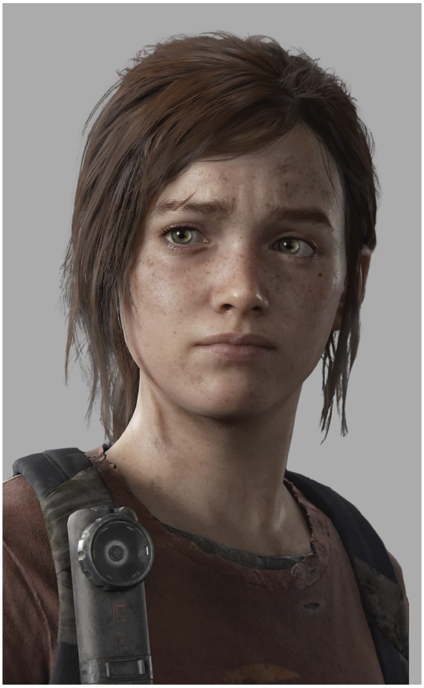

O elenco

Joel

Ellie

Abby
PÁGINA CRIADA POR FÃ
Joel
Ellie
Abby
Fundada em 1984, a Naughty Dog é um dos estúdios de desenvolvimento de jogos mais prolíficos e bem-sucedidos do mundo, um destaque dentro da PlayStation Studios. Da criação de séries icônicas como Crash Bandicoot e Jak and Daxter a franquias modernas como Uncharted e The Last of Us, a Naughty Dog é a responsável por alguns dos jogos de mais sucesso de público e crítica das plataformas PlayStation da Sony. Com uma tecnologia avançada e narrativas evocativas concentradas nos personagens, a Naughty Dog recebeu centenas de prêmios da indústria e da mídia, ao mesmo tempo conquistando um público apaixonado de milhões de jogadores no mundo inteiro. Entre os lançamentos mais recentes da Naughty Dog, estão UNCHARTED 4: A Thief's End, de 2016, vencedor de inúmeros prêmios Jogo do Ano, UNCHARTED: The Lost Legacy, de 2017, uma nova aventura individual, e UNCHARTED: Legacy of Thieves Collection, de 2022, na série UNCHARTED. Em dezembro de 2017, as vendas globais totais da franquia Uncharted ultrapassaram a marca de 41,7 milhões de cópias vendidas. O título mais recente da Naughty Dog é The Last of Us Part I, uma releitura do premiado sucesso de 2013 para PlayStation 3, The Last of Us. The Last of Us Part I já está disponível para PS5. A Naughty Dog é uma subsidiária exclusiva da Sony Interactive Entertainment localizada em Santa Monica, Califórnia. Caso queira mais informações, siga-os no Twitter, no Facebook ou no Instagram.